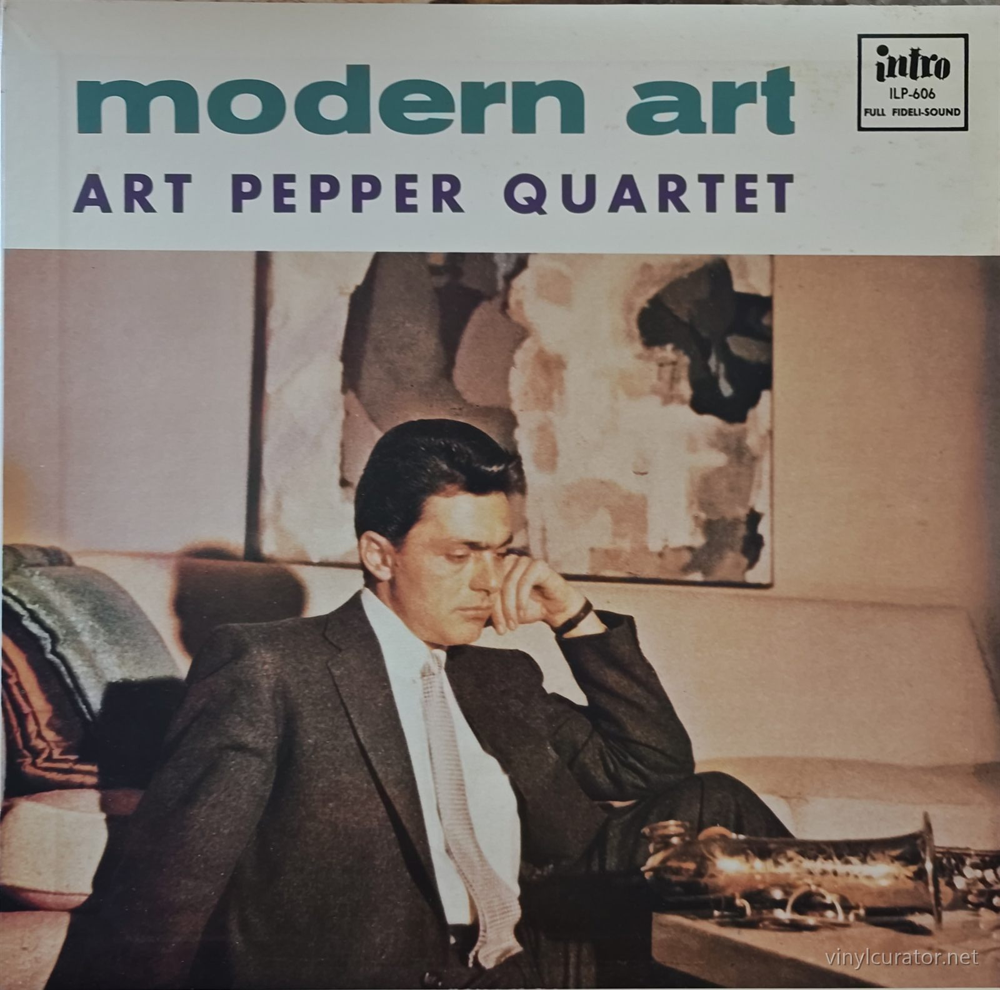
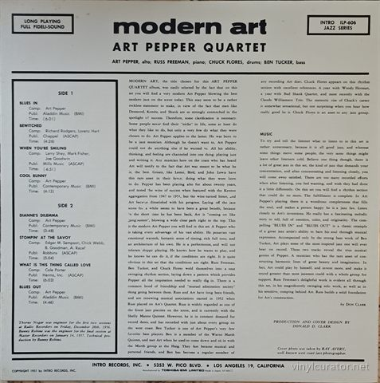
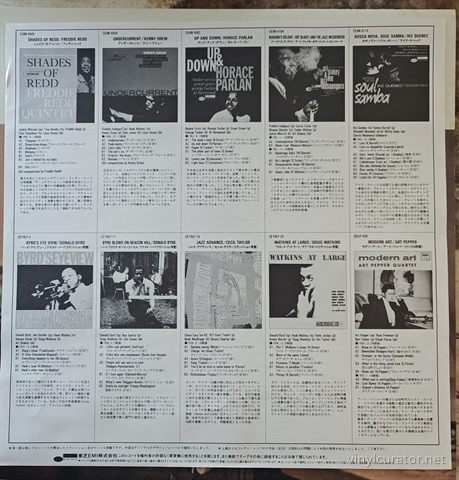
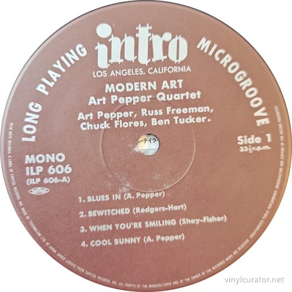
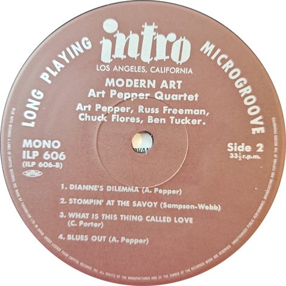
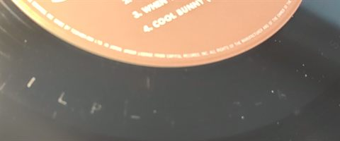
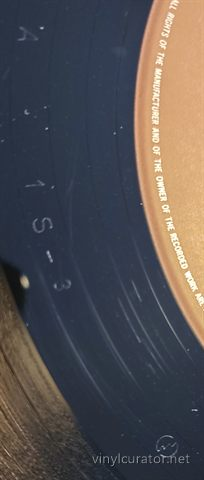
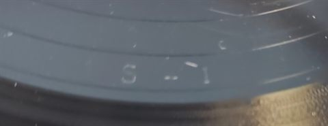

Thank you for buying this record. What follows is its documentation: the
pressing identified, the matrix / runout transcribed by hand from the dead
wax, and the condition as assessed before it was listed. It is yours to keep
with the record.
Art Pepper Quartet
Modern Art
1989 · Intro ILP-606 · Mono · Japan (licensed Toshiba-EMI pressing of the US Intro master) · LP · 33 1/3 RPM








Pressing details
Label
Intro
Catalogue number
ILP-606
Year
1989
Mono / Stereo
Mono
Country
Japan (licensed Toshiba-EMI pressing of the US Intro master)
Format
LP
Speed
33 1/3 RPM
Genre
Jazz - West Coast Cool Jazz
Producer
Donald D. Clark (production), Bunny Robyn (technical production, January 14, 1957 session)
Musicians
Art Pepper (alto sax), Russ Freeman (piano), Ben Tucker (bass), Chuck Flores (drums); engineers Thorne Nogar (December 28, 1956 session, Radio Recorders) and Bunny Robyn (January 14, 1957 session, Master Recorders) credited in the liner notes
1957 - US Intro ILP-606 original mono, brown label, Los Angeles address, period US stock
1976 - Japan Intro ILP-606 reissue, mono
1979 - Japan Intro K23P-6711 'Jazztime Now!!' series reissue, mono
1989 - Japan Toshiba-EMI ILP 606 'Blue Note LP Last Reissue - 20' series, facsimile label with Capitol-license rim text <- this copy
This Pressing
Japanese Toshiba-EMI reissue (mono, Nov 8, 1989, Blue Note LP Last Reissue - 20 series) - facsimile 1957 Intro label with Capitol-license rim text; deadwax 'ILP-606-A 1S-3' / 'ILP-606-B 1S-1' matches Discogs variant r3427115; sits well below the scarce US 1957 Intro first pressing.
The Album
Modern Art captures the Art Pepper Quartet at a pivotal early moment in the alto saxophonist's rise on the West Coast scene, recorded across two Los Angeles sessions - December 28, 1956 at Radio Recorders and January 14, 1957 at Master Recorders. The program balances four Pepper originals against four standards: the blues frames 'Blues In' and 'Blues Out' plus 'Cool Bunny' and 'Dianne's Dilemma,' alongside Rodgers and Hart's 'Bewitched,' 'When You're Smiling,' 'Stompin' at the Savoy,' and Cole Porter's 'What Is This Thing Called Love.' Don Clark's original liner notes made the era's pitch plainly, billing Pepper as playing the most modern jazz on the scene and drawing comparisons to Desmond, Konitz, and Shank. Pepper stands as one of the defining alto voices of 1950s West Coast jazz - lyrical, vibrato-rich, rhythmically supple, a cooler counterweight to the East Coast hard-bop mainstream - even as addiction and incarceration repeatedly interrupted his career in the decades that followed. Cut just before his celebrated 1957 Contemporary date Art Pepper Meets the Rhythm Section, the album documents his own working-quartet concept in full flower: relaxed, unhurried interplay rather than uptempo display. Its compact, front-to-back coherence has kept it a touchstone of the intimate small-group side of the cool school and an enduring entry in Pepper's catalog.
Tracklist
Side 1
1. Blues In
2. Bewitched
3. When You're Smiling
4. Cool Bunny
Side 2
1. Dianne's Dilemma
2. Stompin' At The Savoy
3. What Is This Thing Called Love
4. Blues Out
The Label
This copy carries a facsimile of the original 1957 Intro design - brown/tan label, white print, 'LOS ANGELES, CALIFORNIA' banner under the logo, 'LONG PLAYING'/'MICROGROOVE' arcs - but the rim text reads 'MADE BY TOSHIBA-EMI LTD. IN JAPAN UNDER LICENSE FROM CAPITOL RECORDS INC.', a line no period pressing could carry, and the typeset 'MONO ILP 606 (ILP 606-A/B)' block is anachronistic. Intro was the Mesner brothers' short-lived Aladdin Records subsidiary (5352 W. Pico Blvd., Los Angeles), revived in 1957 for only a handful of LPs - two Lester Young reissues and two new jazz dates, Modern Art among them - before the Aladdin catalog passed through Imperial, Liberty and Transamerica/United Artists into Capitol/EMI ownership. That chain of title is exactly what authorized Toshiba-EMI to reproduce the vintage Intro artwork under Capitol license in its late-1980s Japanese revival program for the Aladdin/Intro/Transition-family catalogs. The design placement therefore proves this is a licensed 1989 Japanese reissue (Blue Note LP Last Reissue - 20 series, November 8, 1989), sitting well below the scarce 1957 US original in the pressing hierarchy.
Fidelity
Japanese mono cut of the original December 1956/January 1957 Los Angeles masters, with '1S' mother/stamper notation typical of Toshiba-EMI's late-1980s licensed reissue runs rather than a dedicated audiophile remaster; the lacquer source is not documented as fresh-from-original-tape and should be assumed a generation removed. Toshiba-EMI pressings of this era are physically quiet and well-pressed, but collector commentary on this Japanese lineage is mixed on EQ: the top end is clean and clear while the midrange and especially the bass can sound thin - a frequently criticized trait of 1980s Japanese jazz reissues. No Music Matters, Analogue Productions, Classic Records, or Tone Poet edition of this Intro title exists, so the fidelity hierarchy is simple: the true 1957 US Intro mono original sits on top, and this Toshiba-EMI cut is a clean, listenable but tonally leaner budget alternative well below it.
Notes
Toshiba-EMI Japanese reissue of Intro ILP-606, released November 8, 1989 in the 'Blue Note LP Last Reissue - 20' series - not a 1957 US original. Decisive evidence: both labels carry the rim text 'MADE BY TOSHIBA-EMI LTD. IN JAPAN UNDER LICENSE FROM CAPITOL RECORDS INC.', and the back jacket adds 'Manufactured by TOSHIBA-EMI LIMITED / Made in Japan' beneath the facsimile 1957 Intro address. The deadwax transcription shows only Japanese mother/stamper notation ('ILP-606-A 1S-3' / 'ILP-606-B 1S-1'), matching Discogs variant r3427115. The monochrome insert with Japanese text and companion Blue Note/Transition/Intro titles confirms the licensed revival program. No US-original plant or label identifiers are present anywhere on the copy.
About this documentation
Every record in this archive is photographed against a full checklist, its
matrix / runout transcribed by hand, and its pressing identified against label
discographies, variant records and sales histories.
I do that work for other people’s collections too — documenting a
collection record by record, researching individual pressings, and preparing
collections for sale or for insurance. If you have a collection you would like
documented, or a record you want identified properly, get in touch:
email
This record’s page: https://vinylcurator.net/albums/art-pepper-quartet-modern-art/